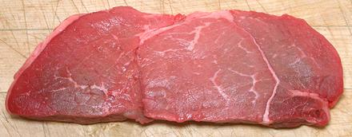

Petite Sirloin Steak

This cut seems to vary in interpretation. Some vendors claim theirs are
from the Top Sirloin, but it seems more official that they are one of
the cuts from the Sirloin Tip, or Knuckle (See Round). This cut has
very good flavor and is quite moderately tough.
The photo specimen was 8 inches long, 3 inches wide and 7/8 inch
thick, weighing 8.9 ounces. It was stupidly priced at 2013 US $9.99 /
pound, but if you bought one tray you got another "free", so the
effective price was about $5.00 / pound.
More on Cuts of Beef.
Cooking:
This is another cut that should be grilled
or broiled over very high heat so it is almost chared on the outside
and quite rare on the inside, and then is sliced thin crosswise. I have
also sliced these in half horizontally and pan fried them successfully.
They were a little chewy, but not at all disturbingly so.
ab_sirpetz 131102 - www.clovegarden.com
©Andrew Grygus - agryg@clovegarden.com - Photos
on this page not otherwise credited © cg1
- Linking to and non-commercial use of this page permitted